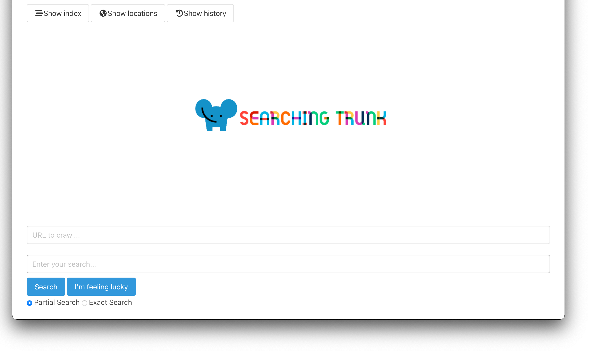

Searching Trunk
Description
This is a search engine that is built with a multithreaded web crawler for the backend and embedded Jetty with servlets for the frontend.
Users would have to input different URLs into the search engine. Then, they're able to search the word they type in with the option of an exact search or partial search. The searched word will be added to a stored history index and the user will also be able to view the whole index as well as the locations of each index in the websites searched.
This search engine utilizes multithreading efficiently. It boosts the performace by at least 80% compared to single-threading.
Skill(s) Used
- Java
- HTML
- Jetty